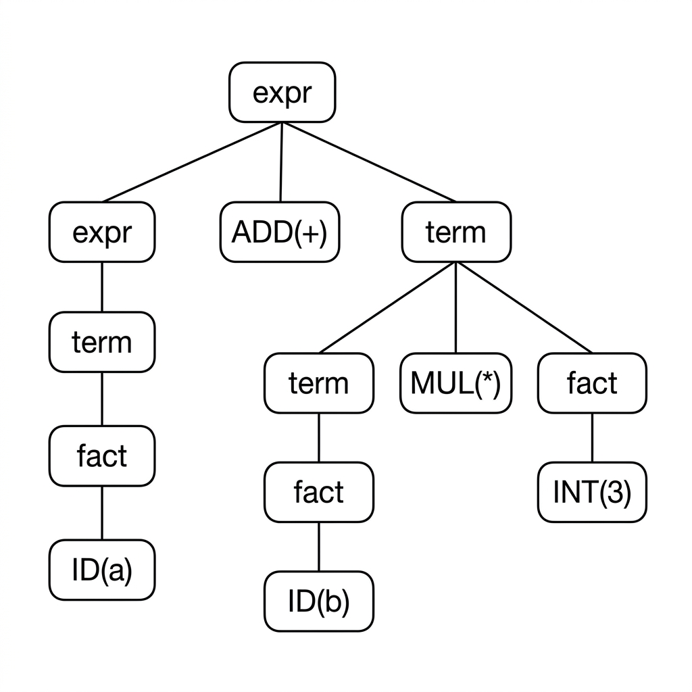
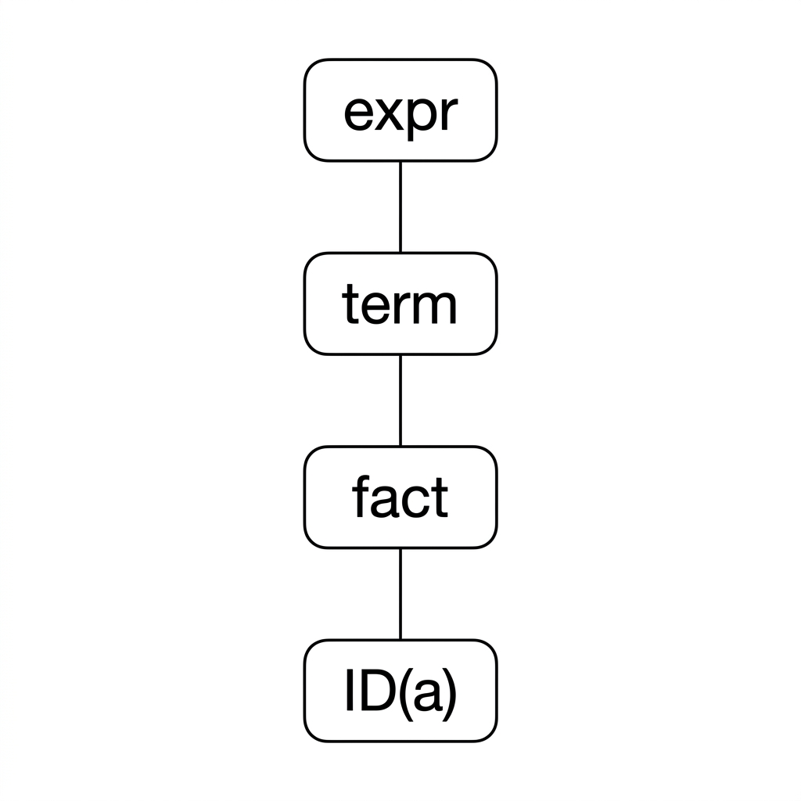
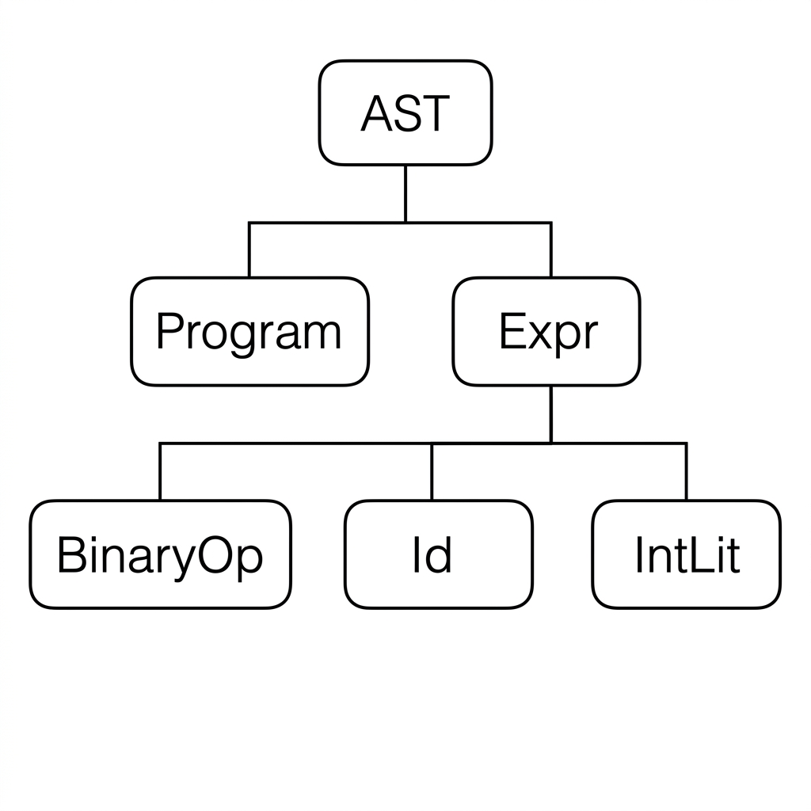
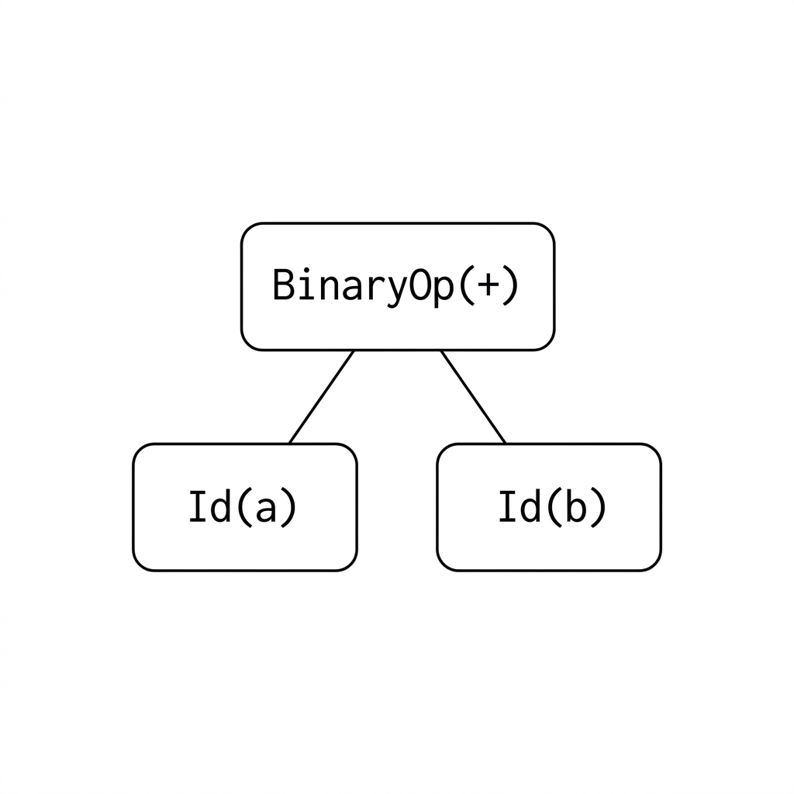
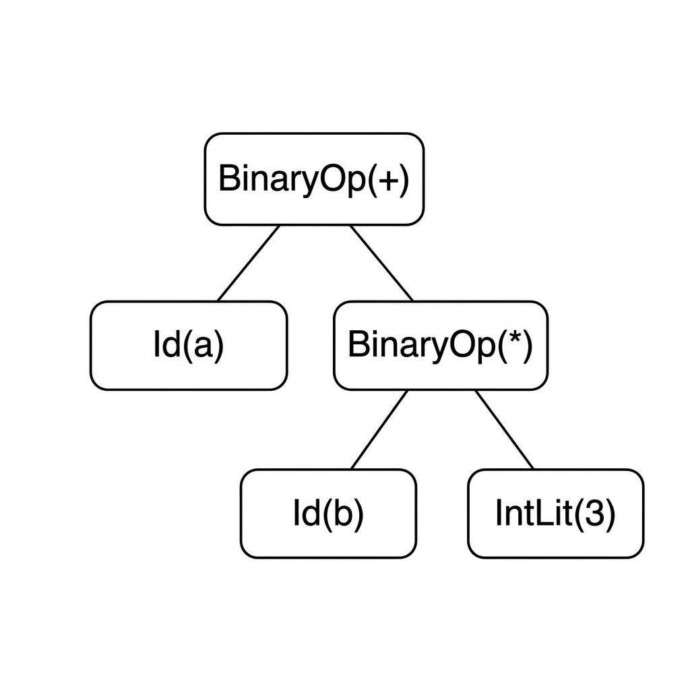
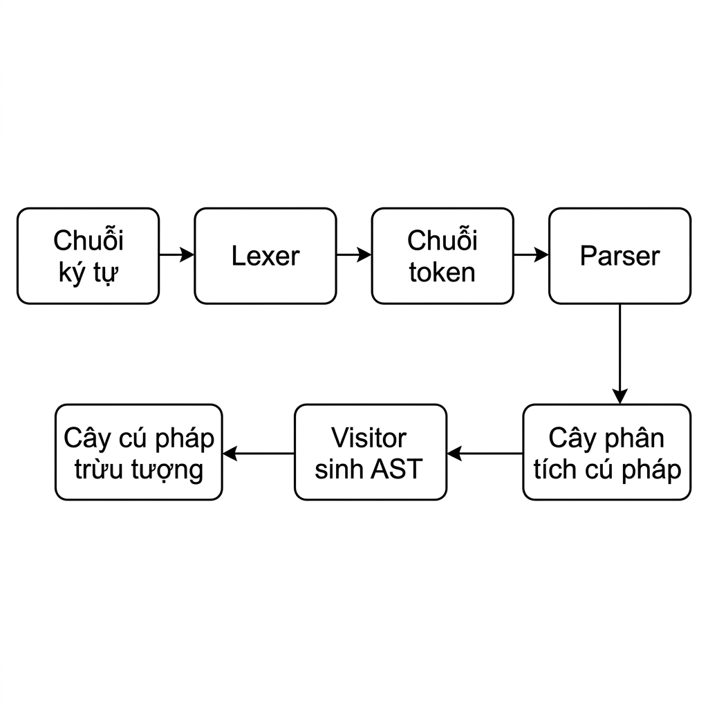

Mở đầu
Sau khi bộ phân tích cú pháp kiểm tra chương trình và tạo ra cây phân tích cú pháp (parse tree), trình biên dịch chưa nên dùng trực tiếp cây này cho các pha tiếp theo. Lý do là cây phân tích cú pháp phản ánh rất sát văn phạm cụ thể, bao gồm nhiều chi tiết chỉ phục vụ việc nhận dạng cú pháp, chẳng hạn dấu ngoặc, dấu phẩy, dấu chấm phẩy, các ký hiệu không kết thúc trung gian như expr, term, fact, hoặc các node chỉ tồn tại để biểu diễn cách viết văn phạm.
Các pha sau như phân tích ngữ nghĩa (semantic analysis), kiểm tra kiểu (type checking), phân tích tĩnh (static analysis), thông dịch (interpretation) hoặc sinh mã trung gian (intermediate code generation) cần một biểu diễn gọn hơn và gần với ý nghĩa chương trình hơn. Biểu diễn đó là cây cú pháp trừu tượng (Abstract Syntax Tree, AST).
Chương này trình bày cách chuyển từ cây phân tích cú pháp sang cây cú pháp trừu tượng. Trọng tâm không chỉ là định nghĩa AST, mà còn là cách thiết kế lớp AST, cách đọc cây phân tích cú pháp do ANTLR4 sinh ra, cách nhận diện các mẫu chuyển đổi phổ biến và cách hiện thực quá trình sinh AST bằng visitor của ANTLR4.
Hiểu về cây cú pháp trừu tượng
Cây cú pháp trừu tượng là gì?
Cây cú pháp trừu tượng (Abstract Syntax Tree, AST) là biểu diễn dạng cây của cấu trúc cú pháp trừu tượng của chương trình nguồn. Khác với cây phân tích cú pháp, AST không cố giữ lại mọi chi tiết của văn phạm cụ thể. Nó chỉ giữ những thành phần có ý nghĩa cho các pha xử lý tiếp theo.
Nói cách khác, AST không trả lời câu hỏi "chuỗi token này được suy dẫn chính xác bằng các luật văn phạm nào?", mà trả lời câu hỏi "chương trình này gồm những cấu trúc có ý nghĩa nào?".
Ví dụ, với biểu thức (a + b), cây phân tích cú pháp có thể chứa các thành phần như: LP expr ADD term RP. Trong khi đó, AST chỉ cần giữ lại ý nghĩa chính:
BinaryOp("+", Id("a"), Id("b"))Dấu ngoặc trong ví dụ này chỉ dùng để nhóm biểu thức. Sau khi cấu trúc đã được xác định, dấu ngoặc không cần trở thành một node riêng trong AST.
Một AST tốt thường giữ lại:
| Thành phần nên giữ | Ví dụ |
|---|---|
| Cấu trúc chương trình có ý nghĩa | chương trình, khai báo, câu lệnh, biểu thức |
| Toán tử và toán hạng | +, *, vế trái, vế phải |
| Định danh và literal | Id("a"), IntLit(3) |
| Quan hệ giữa các cấu trúc con | biểu thức trái/phải, thân hàm, điều kiện |
| Dữ liệu cần cho pha sau | tên biến, giá trị literal, loại toán tử |
Ngược lại, AST thường loại bỏ:
| Thành phần thường loại bỏ | Lý do |
|---|---|
| Dấu ngoặc chỉ dùng để nhóm | Cấu trúc cây đã thể hiện việc nhóm |
| Dấu phẩy, dấu chấm phẩy | Thường chỉ là ký hiệu phân cách |
| Node trung gian của văn phạm | expr → term → fact không cần giữ nguyên |
| Từ khóa chỉ đánh dấu cú pháp | if, while thường được thay bằng node If, While |
| Token phụ trợ | LP, RP, SEMI nếu không mang ý nghĩa ngữ nghĩa |
Ví dụ với biểu thức a + b * 3: AST nên thể hiện rằng phép nhân nằm sâu hơn phép cộng:
BinaryOp("+", Id("a"), BinaryOp("*", Id("b"), IntLit(3)))Cây phân tích cú pháp và cây cú pháp trừu tượng
Cây phân tích cú pháp và AST đều là cây, nhưng mục tiêu thiết kế khác nhau.
| Khía cạnh | Cây phân tích cú pháp | Cây cú pháp trừu tượng |
|---|---|---|
| Mục đích chính | Kiểm tra cấu trúc theo văn phạm | Biểu diễn ý nghĩa chương trình |
| Hình dạng cây | Bám sát luật văn phạm | Gọn hơn, hướng ngữ nghĩa hơn |
| Ký hiệu kết thúc | Thường giữ đầy đủ | Chỉ giữ khi có ý nghĩa |
| Dấu câu | Thường xuất hiện | Thường bị loại bỏ |
| Node trung gian | Có nhiều | Thường được rút gọn |
| Pha sử dụng chính | Phân tích cú pháp | Phân tích ngữ nghĩa, thông dịch, sinh mã |
Xét văn phạm biểu thức:
expr : expr ADD term | term ;
term : term MUL fact | fact ;
fact : LP expr RP | ID | INT ;Với đầu vào a + b * 3, cây phân tích cú pháp bám sát các luật expr, term, fact. Cây phân tích cú pháp có thể minh họa như sau:

a + b * 3, bám sát luật văn phạm.AST tương ứng gọn hơn nhiều, chỉ cần các node có ý nghĩa như BinaryOp, Id, IntLit:

a + b * 3 — gọn hơn, không có node trung gian.expr, term, fact. Các node này cần thiết cho parser, nhưng không cần thiết cho phân tích ngữ nghĩa. AST trực tiếp thể hiện cấu trúc tính toán: cộng a với kết quả của phép nhân b * 3.
Vì sao cần cây cú pháp trừu tượng?
Cây phân tích cú pháp là bằng chứng rằng chuỗi token phù hợp với văn phạm. Tuy nhiên, nó quá chi tiết và quá phụ thuộc vào cách viết văn phạm. Nếu dùng trực tiếp parse tree cho các pha sau, mã phân tích ngữ nghĩa sẽ phải xử lý quá nhiều node phụ trợ.
Ví dụ, với một định danh đơn giản a, parse tree có thể có dạng:

a phải đi qua expr → term → fact → ID(a).Nhưng ở mức ý nghĩa, đây chỉ là Id("a"). Nếu pha kiểm tra kiểu phải đi qua expr, rồi term, rồi fact chỉ để biết đây là biến a, mã sẽ dài và phụ thuộc nặng vào văn phạm cụ thể.
AST là biểu diễn tốt hơn cho:
| Pha xử lý | AST hỗ trợ như thế nào |
|---|---|
| Phân giải tên | Tìm khai báo tương ứng với mỗi Id |
| Kiểm tra kiểu | Gắn kiểu cho từng biểu thức |
| Phân tích tĩnh | Kiểm tra lỗi trước khi chạy |
| Thông dịch | Đánh giá trực tiếp trên cây |
| Sinh mã trung gian | Chuyển node AST thành lệnh trung gian |
| Tối ưu hóa | Biến đổi cây hoặc biểu diễn trung gian dễ hơn |
Ví dụ, nếu AST có node BinaryOp("+", Id("a"), IntLit(3)), pha kiểm tra kiểu có thể xử lý trực tiếp: kiểm tra kiểu của Id("a"), kiểm tra kiểu của IntLit(3), rồi kiểm tra toán tử "+" có áp dụng được cho hai kiểu đó không. Không cần quan tâm biểu thức này được parse qua bao nhiêu tầng expr, term, fact.
Thiết kế nút cây cú pháp trừu tượng
Nguyên tắc thiết kế cây cú pháp trừu tượng
Thiết kế AST nên bắt đầu từ các cấu trúc của ngôn ngữ, không nên bắt đầu từ các node phụ trợ của văn phạm. Nói cách khác, node AST nên đại diện cho một khái niệm có ý nghĩa trong chương trình.
Một node AST tốt nên biểu diễn:
| Tiêu chí | Ví dụ |
|---|---|
| Một cấu trúc chương trình có ý nghĩa | Program, BinaryOp, If, While |
| Thông tin cần cho pha sau | tên biến, toán tử, giá trị literal |
| Quan hệ giữa các cấu trúc con | vế trái/vế phải, điều kiện/thân lệnh |
| Đủ dữ liệu để kiểm tra hoặc sinh mã | kiểu toán tử, danh sách tham số |
Một node AST không nên chỉ biểu diễn:
| Không nên biểu diễn | Lý do |
|---|---|
| Lớp ngữ pháp phụ trợ | Expr, Term, Fact nếu chỉ để tạo độ ưu tiên |
| Dấu ngoặc nhóm | Cấu trúc cây đã thể hiện nhóm |
| Dấu phân cách | Dấu phẩy, chấm phẩy thường không có ý nghĩa ngữ nghĩa |
| Từ khóa đánh dấu | if, while thường được thay bằng node If, While |
| Token rỗng hoặc node chuyển tiếp | Không thêm thông tin mới |
Ví dụ với biểu thức a + b, không nên tạo AST như sau:
Expr(Term(Fact(Id("a"))), Add, Term(Fact(Id("b"))))Nên tạo:
BinaryOp("+", Id("a"), Id("b"))Thiết kế thứ hai ngắn hơn, rõ hơn và phù hợp hơn cho các pha sau.
Một AST đơn giản cho biểu thức
Với ngôn ngữ biểu thức số học nhỏ, ta có thể thiết kế các lớp AST như sau:
class AST: pass
class Expr(AST): pass
class Program(AST):
def __init__(self, expr): self.expr = expr
class BinaryOp(Expr):
def __init__(self, op, left, right): self.op, self.left, self.right = op, left, right
class Id(Expr):
def __init__(self, name): self.name = name
class IntLit(Expr):
def __init__(self, value): self.value = value| Lớp | Ý nghĩa |
|---|---|
Program | Node gốc của chương trình |
Expr | Lớp cơ sở cho các biểu thức |
BinaryOp | Biểu thức nhị phân như a + b, x * 3 |
Id | Định danh |
IntLit | Hằng số nguyên |
Ví dụ, biểu thức a + 3 có thể được biểu diễn bằng đối tượng:
ast = BinaryOp("+", Id("a"), IntLit(3))
# Nếu chương trình chỉ gồm một biểu thức:
program = Program(BinaryOp("+", Id("a"), IntLit(3)))Phân cấp lớp AST có thể biểu diễn như sau:

Thiết kế này giúp các pha sau xử lý theo loại node. Ví dụ, kiểm tra kiểu có thể có hàm xử lý BinaryOp, Id, IntLit riêng.
Cây cú pháp trừu tượng cho biểu thức nhị phân
Biểu thức nhị phân là ví dụ tốt để thấy AST biểu diễn độ ưu tiên toán tử. Với biểu thức a + b, AST là:
BinaryOp("+", Id("a"), Id("b"))Cấu trúc cây tương ứng:

a + b.Với biểu thức a + b * 3, AST là:
BinaryOp("+",
Id("a"),
BinaryOp("*", Id("b"), IntLit(3))
)Cấu trúc cây tương ứng:

a + b * 3 — phép nhân nằm sâu hơn phép cộng.Cấu trúc cây thể hiện rằng b * 3 là biểu thức con của phép cộng. Nhờ vậy, pha sinh mã hoặc thông dịch có thể xử lý đúng thứ tự tính toán mà không cần giữ lại dấu ngoặc hoặc toàn bộ parse tree.
Những chi tiết nên loại bỏ
Khi sinh AST, một số chi tiết cú pháp nên được loại bỏ vì không còn cần thiết cho ý nghĩa chương trình.
Ví dụ 1: node trung gian của văn phạm. Chuỗi expr → term → fact → ID nên trở thành: Id("a")
Ví dụ 2: dấu ngoặc dùng để nhóm. Biểu thức (a) nên trở thành Id("a"). Không cần tạo Parenthesized(Id("a")), trừ khi ngôn ngữ có lý do đặc biệt khiến dấu ngoặc mang ý nghĩa riêng.
Ví dụ 3: dấu phân cách. Với danh sách biểu thức a, b, c, AST nên là [Id("a"), Id("b"), Id("c")]. Không cần giữ dấu phẩy.
Ví dụ 4: từ khóa chỉ đánh dấu cú pháp. Với if (cond) stmt, AST nên là If(cond, stmt). Không cần có node riêng cho từ khóa if.
Cây phân tích cú pháp trong ANTLR4
Văn phạm ví dụ
Trong chương này, ta dùng một văn phạm biểu thức số học nhỏ, đặt tên là BKOOL.
grammar BKOOL;
program : expr EOF;
expr : expr ADD term | expr SUB term | term;
term : term MUL fact | term DIV fact | fact;
fact : LP expr RP | ID | INT;
ADD : '+'; SUB : '-'; MUL : '*'; DIV : '/';
LP : '('; RP : ')';
ID : [a-zA-Z]+;
INT : [0-9]+;
WS : [ \t\r\n]+ -> skip;| Nhóm luật | Vai trò |
|---|---|
| Luật parser | program, expr, term, fact |
| Luật lexer | ADD, SUB, MUL, DIV, LP, RP, ID, INT, WS |
Ví dụ, đầu vào a + b * 3 được lexer chuyển thành chuỗi token ID ADD ID MUL INT. Sau đó parser dùng các luật expr, term, fact để tạo cây phân tích cú pháp.
Các tệp được ANTLR4 sinh ra
Khi chạy ANTLR4 trên tệp BKOOL.g4, công cụ sẽ sinh ra nhiều tệp phục vụ quá trình phân tích từ vựng, phân tích cú pháp và duyệt cây.
| Tệp sinh ra | Vai trò |
|---|---|
BKOOLLexer.py | Chuyển chuỗi ký tự thành chuỗi token |
BKOOLParser.py | Phân tích chuỗi token và xây dựng cây phân tích cú pháp |
BKOOLVisitor.py | Cung cấp lớp visitor cơ sở để duyệt cây |
BKOOLListener.py | Cung cấp listener cho cơ chế walk tự động |
Để sinh AST, ta thường tập trung vào hai tệp:
| Tệp | Lý do quan trọng |
|---|---|
BKOOLParser.py | Định nghĩa các context class tương ứng với rule |
BKOOLVisitor.py | Cho phép viết visitor trả về đối tượng AST |
Quy trình tổng quát có thể tóm tắt như sau:

Từ luật parser đến lớp ngữ cảnh
ANTLR4 sinh một lớp ngữ cảnh (context class) cho mỗi luật parser. Các đối tượng context này chính là node trong cây phân tích cú pháp.
program : expr EOF;
expr : expr ADD term | expr SUB term | term;
term : term MUL fact | term DIV fact | fact;
fact : LP expr RP | ID | INT;| Luật parser | Lớp ngữ cảnh |
|---|---|
program | ProgramContext |
expr | ExprContext |
term | TermContext |
fact | FactContext |
Khi viết visitor, mỗi phương thức sẽ nhận một context tương ứng. Ví dụ:
def visitExpr(self, ctx):
...
# ctx là một đối tượng ExprContextContext cho phép ta truy cập các thành phần con của parse tree. Ví dụ, với luật expr : expr ADD term | expr SUB term | term;, trong visitExpr, ta có thể kiểm tra:
ctx.ADD() # có phải alternative ADD không?
ctx.SUB() # có phải alternative SUB không?
ctx.expr() # lấy expr con
ctx.term() # lấy term conTùy alternative nào được parser chọn, một số phương thức sẽ trả về đối tượng khác None, một số sẽ trả về None.
Truy cập con trong context
Khi làm việc với context object, có nhiều cách truy cập con.
| Cách truy cập | Ví dụ | Nhận xét |
|---|---|---|
| Theo chỉ số | ctx.getChild(0) | Nhanh nhưng dễ vỡ khi grammar đổi |
| Theo rule method | ctx.term() | Dễ đọc hơn |
| Theo occurrence | ctx.term(0) | Dùng khi một rule xuất hiện nhiều lần |
| Theo token method | ctx.ID() | Lấy terminal token |
| Lấy text | ctx.getText() | Lấy chuỗi nguồn tương ứng |
| Đếm số con | ctx.getChildCount() | Phân biệt alternative nếu cần |
Ví dụ, với luật fact : LP expr RP | ID | INT;:
if ctx.LP():
return self.visit(ctx.expr())
if ctx.ID():
return Id(ctx.ID().getText())
if ctx.INT():
return IntLit(int(ctx.INT().getText()))Cách viết này rõ ràng hơn nhiều so với ctx.getChild(1), vì ctx.LP(), ctx.ID(), ctx.INT() thể hiện trực tiếp ý nghĩa ngữ pháp. Nếu grammar thay đổi, chỉ số có thể không còn đúng.
Duyệt cây và sinh cây cú pháp trừu tượng
Cần phân biệt duyệt cây phân tích cú pháp (parse tree traversal) và sinh cây cú pháp trừu tượng (AST generation).
Duyệt cây nghĩa là đi qua các node của parse tree. Sinh AST nghĩa là trong quá trình duyệt đó, ta chuyển từng context thành đối tượng AST có ý nghĩa.
| Context | AST trả về |
|---|---|
ProgramContext | Program(...) |
ExprContext với ADD | BinaryOp("+", ..., ...) |
ExprContext với SUB | BinaryOp("-", ..., ...) |
FactContext với ID | Id(...) |
FactContext với INT | IntLit(...) |
FactContext với ngoặc | AST của biểu thức bên trong |
Visitor rất phù hợp cho sinh AST vì mỗi phương thức
visitX có thể trả về kết quả — một node AST, một danh sách node AST hoặc giá trị khác tùy thiết kế.
Sinh cây cú pháp trừu tượng
Các hướng dẫn thực hành
Khi viết mã sinh AST, có thể áp dụng các hướng dẫn sau theo thứ tự:
- Bắt đầu từ luật đơn giản nhất, tức luật có nhiều ký hiệu kết thúc nhất; ưu tiên xử lý literal, định danh và ngoặc trước.
- Luật sinh có bao nhiêu trường hợp thì phải xử lý cho bấy nhiêu trường hợp, tránh bỏ sót các nhánh văn phạm. Các xử lý trên các nhánh phải trả về cùng một kiểu kỳ vọng.
- Khi gặp ký hiệu không kết thúc, phải lập tức gọi visit và để luật con tự sinh AST của nó. Giá trị trả về chính là AST của con.
- Trong mỗi phương thức visitor, chỉ xử lý các con trực tiếp; không nên xử lý thay việc của luật sinh cháu.
- Khi đã đủ dữ liệu, hãy tạo đối tượng AST ngay, tránh giữ các nút của cây phân tích cú pháp lâu hơn mức cần thiết.
Ví dụ, với luật expr : expr ADD term | expr SUB term | term;, ta nên xử lý ba trường hợp:
| Alternative | AST trả về |
|---|---|
expr ADD term | BinaryOp("+", visit(expr), visit(term)) |
expr SUB term | BinaryOp("-", visit(expr), visit(term)) |
term | visit(term) |
Trường hợp cuối là chuyển tiếp (forwarding case): nó không tạo node mới, mà trả về AST của con.
Bắt đầu từ luật đơn giản nhất
Luật đơn giản nhất ở đây là luật có nhiều ký hiệu kết thúc nhất. Trong văn phạm ví dụ, đó là fact:
fact : LP expr RP | ID | INT;| Trường hợp | Chuyển đổi |
|---|---|
LP expr RP | Bỏ ngoặc, trả về AST của expr |
ID | Tạo Id(text) |
INT | Tạo IntLit(value) |
def visitFact(self, ctx):
if ctx.LP():
return self.visit(ctx.expr()) # bỏ dấu ngoặc
if ctx.ID():
return Id(ctx.ID().getText())
if ctx.INT():
return IntLit(int(ctx.INT().getText()))Dòng return self.visit(ctx.expr()) dùng cho trường hợp ngoặc. Nếu đầu vào là (a + 3), AST của toàn bộ fact chính là AST của a + 3. Dấu ngoặc đã hoàn thành nhiệm vụ nhóm cú pháp, nên bị loại bỏ.
Lưu ý: ctx.INT().getText() trả về chuỗi như "123", trong khi AST nên lưu giá trị số 123, nên cần dùng int(...).
Mỗi alternative là một trường hợp
Luật expr có ba alternative, mỗi alternative nên được xử lý thành một trường hợp rõ ràng:
def visitExpr(self, ctx):
if ctx.ADD():
return BinaryOp("+", self.visit(ctx.expr()), self.visit(ctx.term()))
if ctx.SUB():
return BinaryOp("-", self.visit(ctx.expr()), self.visit(ctx.term()))
return self.visit(ctx.term()) # forwarding caseNếu parser đang ở alternative term, ta không tạo node Expr. Ta chỉ trả về AST của term. Cách làm này giúp AST không chứa các node trung gian không có ý nghĩa.
Tương tự, luật term:
def visitTerm(self, ctx):
if ctx.MUL():
return BinaryOp("*", self.visit(ctx.term()), self.visit(ctx.fact()))
if ctx.DIV():
return BinaryOp("/", self.visit(ctx.term()), self.visit(ctx.fact()))
return self.visit(ctx.fact())Hai luật expr và term có cấu trúc giống nhau, chỉ khác toán tử và mức ưu tiên. Vì vậy, mã sinh AST cũng có hình dạng tương tự.
Chỉ xử lý con trực tiếp
Khi viết một phương thức visitor, chỉ nên xử lý các con trực tiếp của context hiện tại. Không nên đi xuống quá sâu để xử lý thay các rule con.
Ví dụ, trong visitExpr, ta chỉ cần biết expr hiện tại là cộng, trừ hoặc chuyển tiếp sang term. visitExpr không cần biết term bên trong là nhân, chia hay một fact. Điều đó thuộc trách nhiệm của visitTerm.
| Lợi ích | Giải thích |
|---|---|
| Mã ngắn hơn | Mỗi method chỉ xử lý một rule |
| Dễ kiểm tra | Lỗi ở rule nào tìm ở method đó |
| Dễ sửa grammar | Thay đổi cục bộ ít ảnh hưởng |
| Tương ứng với văn phạm | Dễ dạy và dễ học |
getChild. Cách đó làm mã khó đọc và rất dễ sai khi grammar thay đổi.
Tạo đối tượng sớm và kiểm thử cấu trúc
Khi đã đủ thông tin để tạo node AST, nên tạo và trả về ngay. Không nên giữ parse tree rồi xử lý lại ở nhiều nơi. Ví dụ, với đầu vào a + b * 3, AST kỳ vọng là:
Program(
BinaryOp("+",
Id("a"),
BinaryOp("*", Id("b"), IntLit(3))
)
)Có thể kiểm thử theo checklist:
| Câu hỏi kiểm thử | Kỳ vọng |
|---|---|
Node gốc có phải Program không? | Có |
Toán tử gốc của biểu thức có phải + không? | Có |
Vế trái của + có phải Id("a") không? | Có |
Vế phải của + có phải BinaryOp("*", ...) không? | Có |
b có thành Id("b") không? | Có |
3 có thành IntLit(3) không? | Có |
Các node expr, term, fact đã bị loại bỏ chưa? | Có |
Một cách đơn giản để hỗ trợ kiểm thử là viết phương thức biểu diễn chuỗi cho các lớp AST:
class BinaryOp(Expr):
def __init__(self, op, left, right): self.op, self.left, self.right = op, left, right
def __repr__(self): return f'BinaryOp("{self.op}", {self.left}, {self.right})'
class Id(Expr):
def __init__(self, name): self.name = name
def __repr__(self): return f'Id("{self.name}")'
class IntLit(Expr):
def __init__(self, value): self.value = value
def __repr__(self): return f"IntLit({self.value})"print(ast)
# Program(BinaryOp("+", Id("a"), BinaryOp("*", Id("b"), IntLit(3))))Hiện thực bằng visitor của ANTLR4
Tổ chức lớp sinh cây cú pháp trừu tượng
ANTLR4 sinh ra một lớp visitor cơ sở. Ta có thể kế thừa lớp này và ghi đè các phương thức cần thiết để trả về AST.
class ASTGeneration(BKOOLVisitor):
def visitProgram(self, ctx):
return Program(self.visit(ctx.expr()))Phương thức visitProgram nhận ProgramContext và trả về node Program. Vì luật grammar là program : expr EOF;, nên node Program chỉ cần chứa AST của expr. Token EOF chỉ dùng để đảm bảo parser đọc hết đầu vào, không cần trở thành node AST.
Cài đặt đầy đủ cho văn phạm biểu thức
class ASTGeneration(BKOOLVisitor):
def visitProgram(self, ctx):
return Program(self.visit(ctx.expr()))
def visitExpr(self, ctx):
if ctx.ADD():
return BinaryOp("+", self.visit(ctx.expr()), self.visit(ctx.term()))
if ctx.SUB():
return BinaryOp("-", self.visit(ctx.expr()), self.visit(ctx.term()))
return self.visit(ctx.term())
def visitTerm(self, ctx):
if ctx.MUL():
return BinaryOp("*", self.visit(ctx.term()), self.visit(ctx.fact()))
if ctx.DIV():
return BinaryOp("/", self.visit(ctx.term()), self.visit(ctx.fact()))
return self.visit(ctx.fact())
def visitFact(self, ctx):
if ctx.LP():
return self.visit(ctx.expr())
if ctx.ID():
return Id(ctx.ID().getText())
if ctx.INT():
return IntLit(int(ctx.INT().getText()))| Method | Trách nhiệm |
|---|---|
visitProgram | Tạo node gốc Program |
visitExpr | Xử lý cộng, trừ hoặc chuyển tiếp |
visitTerm | Xử lý nhân, chia hoặc chuyển tiếp |
visitFact | Xử lý ngoặc, định danh, số nguyên |
Đây là dạng cài đặt dễ dạy và dễ kiểm tra vì nó phản ánh trực tiếp cấu trúc văn phạm.
Chạy lexer, parser và visitor
from antlr4 import InputStream, CommonTokenStream
from BKOOLLexer import BKOOLLexer
from BKOOLParser import BKOOLParser
source = InputStream("a + b * 3")
lexer = BKOOLLexer(source)
tokens = CommonTokenStream(lexer)
parser = BKOOLParser(tokens)
parse_tree = parser.program()
ast = ASTGeneration().visit(parse_tree)
print(ast)| Bước | Mã |
|---|---|
| Tạo input | InputStream("a + b * 3") |
| Tạo lexer | BKOOLLexer(source) |
| Tạo chuỗi token | CommonTokenStream(lexer) |
| Tạo parser | BKOOLParser(tokens) |
| Parse từ rule gốc | parser.program() |
| Sinh AST | ASTGeneration().visit(parse_tree) |
Nếu các lớp AST có __repr__, kết quả có thể là:
Program(BinaryOp("+", Id("a"), BinaryOp("*", Id("b"), IntLit(3))))Kết quả này cho thấy parse tree đã được rút gọn thành biểu diễn trừu tượng hơn.
Một số lỗi thường gặp
| Lỗi | Ví dụ chưa tốt | Cách tốt hơn |
|---|---|---|
| Sao chép parse tree vào AST | Expr(Term(Fact(Id("a")))) | Id("a") |
| Giữ dấu câu thành node | Parenthesized("(", expr, ")") | expr |
Dùng getChild(index) quá nhiều | ctx.getChild(1) | ctx.expr(), ctx.term() |
| Không đổi kiểu literal | IntLit("123") | IntLit(123) |
| Bỏ sót alternative | Chỉ xử lý ADD, quên SUB | Xử lý mọi alternative |
| Trả về không nhất quán | Khi trả Expr, khi trả token | Mỗi rule nên trả về kiểu kỳ vọng |
Ví dụ lỗi chuyển số nguyên:
return IntLit(ctx.INT().getText()) # Sai: getText() trả về chuỗi "123"return IntLit(int(ctx.INT().getText())) # Đúng: chuyển thành số 123Ví dụ lỗi giữ dấu ngoặc:
return Parenthesized(self.visit(ctx.expr())) # Sai: ngoặc không có ý nghĩa ngữ nghĩareturn self.visit(ctx.expr()) # Đúng: bỏ dấu ngoặc, giữ AST bên trongMở rộng sang các cấu trúc khác
Dù chương này dùng biểu thức số học nhỏ, nguyên tắc sinh AST áp dụng cho nhiều cấu trúc ngôn ngữ khác.
Ví dụ câu lệnh gán:
# Grammar
assignStmt : ID ASSIGN expr SEMI;
# AST class
class Assign(AST):
def __init__(self, lhs, rhs): self.lhs, self.rhs = lhs, rhs
# Visitor
def visitAssignStmt(self, ctx):
return Assign(Id(ctx.ID().getText()), self.visit(ctx.expr()))Ở đây, ASSIGN và SEMI không cần giữ trong AST. Toán tử gán đã được biểu diễn bằng node Assign.
Ví dụ câu lệnh điều kiện:
# Grammar
ifStmt : IF LP expr RP stmt ELSE stmt;
# AST class
class If(AST):
def __init__(self, cond, thenStmt, elseStmt):
self.cond, self.thenStmt, self.elseStmt = cond, thenStmt, elseStmt
# Visitor
def visitIfStmt(self, ctx):
return If(self.visit(ctx.expr()), self.visit(ctx.stmt(0)), self.visit(ctx.stmt(1)))Các token IF, LP, RP, ELSE chủ yếu đánh dấu cú pháp. AST chỉ cần giữ điều kiện, nhánh đúng và nhánh sai.
Ví dụ danh sách câu lệnh:
# Grammar
block : LB stmt* RB;
# AST class
class Block(AST):
def __init__(self, stmts): self.stmts = stmts
# Visitor
def visitBlock(self, ctx):
return Block([self.visit(s) for s in ctx.stmt()])Dấu { và } bị loại bỏ. Danh sách statement được giữ lại vì đó là nội dung có ý nghĩa của block.
Tổng kết chương
Sinh cây cú pháp trừu tượng là bước chuyển từ biểu diễn cú pháp cụ thể sang biểu diễn chương trình ở mức trừu tượng hơn. Cây phân tích cú pháp bám sát văn phạm và hữu ích cho parser, nhưng quá chi tiết cho các pha sau. AST loại bỏ các chi tiết không cần thiết như dấu ngoặc nhóm, dấu phân cách, node trung gian của grammar và token chỉ dùng để đánh dấu cú pháp.
Một AST tốt phải được thiết kế dựa trên các cấu trúc có ý nghĩa của ngôn ngữ: chương trình, khai báo, câu lệnh, biểu thức, toán tử, định danh và literal. Khi dùng ANTLR4, parser tạo ra parse tree gồm các context object như ProgramContext, ExprContext, TermContext, FactContext. Ta có thể viết visitor để duyệt các context này và trả về các đối tượng AST tương ứng.
Khi sinh AST, nên bắt đầu từ luật có nhiều ký hiệu kết thúc nhất, xử lý đủ mọi trường hợp của luật sinh với kiểu trả về nhất quán, gọi visit ngay khi gặp ký hiệu không kết thúc và dùng AST con trả về, chỉ xử lý con trực tiếp, liên tục đối chiếu với các nút AST, tạo đối tượng AST khi đủ dữ liệu, và kiểm thử cấu trúc AST thay vì kiểm thử chi tiết cây phân tích cú pháp. Nắm vững bước này là nền tảng để học các pha tiếp theo như phân tích ngữ nghĩa, kiểm tra kiểu, thông dịch và sinh mã.